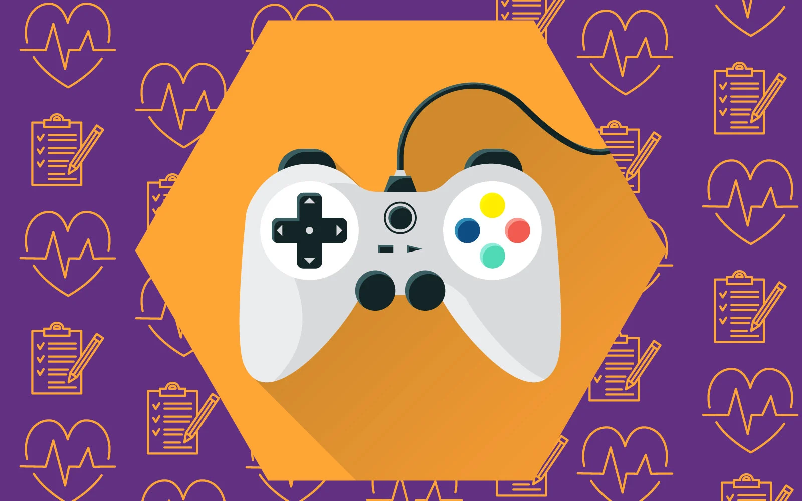

La ergonomía digital se refiere a la forma en que los usuarios interactúan con las tecnologías,
como computadoras y dispositivos móviles. Estudia cómo el diseño de interfaces gráficas (GUI)
puede mejorar la eficiencia y satisfacción del usuario al trabajar con un sistema informático.
Así, la Ergonomía Digital se compone de un conjunto de técnicas y conocimientos que facilitan la
adaptación de Internet a la capacidad y necesidades de las personas, de manera que mejore la eficacia,
la eficiencia, el acceso, la confianza y la seguridad garantizando así una óptima experiencia a los usuarios
en el entorno virtual.
El objetivo principal de la Ergonomía Digital es lograr una experiencia intuitiva para los usuarios
sin sacrificar ninguna función o calidad técnica. La ergonomía digital toma en cuenta muchos factores
diferentes para crear entornos confortables e interactivos que permiten a los usuarios realizar sus
actividades de manera fácil y rápida.
Otros aspectos y características de la Ergonomía Digital a tener en cuenta:
• Es un concepto innovador: es la primera vez que se agrupa este conjunto de conocimientos.
• Genera una nueva ciencia multidisciplinar.
• Crea un nuevo perfil profesional: Ergónomo Digital.
• Requiere formación continua.
• Proporciona un servicio de impacto adaptable ya que permite ofrecer servicios independientes.
• Propicia un nuevo marco de trabajo.
La aplicación de la ergonomía al diseño de las interfaces en páginas Web conduce a
múltiples beneficios tales como: aumento en la productividad, disminución de errores,
requerimientos menores de tiempos de aprendizaje, lo que se traduce en reducción de costos
de entrenamiento y soporte técnico


La ergonomía de las aplicaciones multimedia, también conocida como ergonomía digital,
se enfoca en cómo los usuarios interactúan con las interfaces gráficas de usuario (GUI)
en dispositivos digitales. Su objetivo es optimizar la eficiencia y satisfacción del
usuario al trabajar con un sistema informático. La ergonomía digital busca crear interfaces
intuitivas, fáciles de usar y adaptadas a las necesidades del usuario, lo que puede mejorar
la productividad y reducir errores.
El enfoque de la ergonomía digital se centra en:
